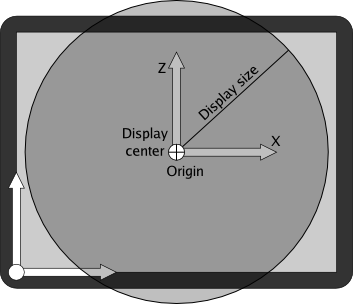
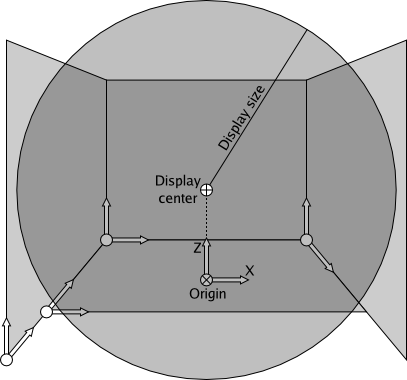
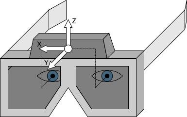

The Vrui Display Area and its Coordinate Systems
A VR environment in Vrui is defined by the position/orientation/size of its screens (monitors, screens, CAVE walls, HMDs, etc.), and the display area enclosed by those screens. Vrui uses a physical coordinate system to specify the environment, and any 3D input device positions/orientations are also reported in these physical coordinates.
The physical coordinate system is completely arbitrary, i.e., it can have arbitrary origin, coordinate axes, and unit of measurement, as long as all positions/orientations/sizes of the environment and the coordinates reported by all 3D input devices are consistent. Environment integrators can choose any convenient coordinate system; the choice makes no difference to properly written Vrui applications, since those never use physical coordinates directly, and Vrui calculates a proper mapping from applications' navigational coordinates to physical coordinates. To compute this mapping, Vrui also needs to know the center point and size of the display area, the direction of a vector pointing "up", and the size of one inch expressed in the physical coordinate system's unit of measurement. Usually, Vrui applications will initialize navigational coordinates such that the center of the 3D scene coincides with the given display center, the entire scene fits into the display area, and the scene appears upright (if the application has a notion of "up"). Since physical coordinates are arbitrary, it is often easiest to directly use the coordinate system reported by the 3D input devices. If the tracking system is sufficiently accurate, it is even possible to measure all relevant information (such as screen origin positions) using the tracking system.
Below are two example coordinate systems for two different environments (desktop and 4-sided CAVE) that have been used in installations, but they are by no means binding.
Example Coordinate System for Desktop Environment
At first glance it might seem strange to assign physical coordinates to a desktop system, since most regular 3D graphics applications do not do it, but it is very useful to achieve accurate 3D display, especially stereoscopic display. A desktop system typically has a single screen, which is the monitor's screen, and a single non-headtracked viewer sitting at an assumed fixed position in front of the screen. The screen is specified with its actual size, and its position/orientation in physical coordinates. Since the screen is usually the only point of reference in a desktop system, the physical coordinate system is normally aligned with the screen (see Figure 1), and the viewer's position is given relative to the screen.
|  |
| Figure 1: Example physical coordinate system and screen/display area configuration for desktop environments. Physical coordinates are aligned with the screen. |
Example Coordinate System for 4-Sided CAVE
In a 4-sided CAVE, each wall is specified by the position of its lower-left corner, the directions of this horizontal and vertical axes (where lower-left and horizontal/vertical are determined by the displayed image), and its width/height. The display center is usually located at the center of the space enclosed by the CAVE walls, and the display size is set such that the display area's boundary touches the CAVE walls (see Figure 2). In most installations, the physical coordinate system is determined by the 3D tracking system.
|  |
| Figure 2: Example physical coordinate system and screen/display area configuration for 4-sided CAVE environment. |
Let's say that an installation has the physical coordinate system's origin in the center of the CAVE's enclosure, on the floor, and has the X axis going right, the Y axis going horizontally towards the back of the CAVE, and the Z axis pointing straight up. In that case, and assuming 10'x8' walls and using inches as physical coordinate units, the origin of the left wall would be (-60.0, -60.0, 0.0), its horizontal axis would be (0.0, 1.0, 0.0), its vertical axis would be (0.0, 0.0, 1.0), and its width and height would be 120.0 and 96.0, respectively. The floor's origin would be (-60.0, -36.0, 0.0), its horizontal and vertical axes would be (1.0, 0.0, 0.0) and (0.0, 1.0, 0.0), respectively, and its width and height would be 120.0 and 96.0, respectively. The display center would be (0.0, 0.0, 48.0), the display size would be 60.0, the up direction would be (0.0, 0.0, 1.0), and the size of an inch would be 1.0.
Setting up Viewers
The other component determining how a 3D scene is displayed are viewers. A viewer corresponds to a person observing a 3D scene in a VR environment, and the configuration of a viewer defines the position of the viewer's eyes, the general viewing direction, and whether Vrui shall attach a "miner's helmet" headlight to the viewer. A viewer's eye positions etc. are expressed relative to the viewer's coordinate frame. In head-tracked environments, this coordinate frame is provided by the head tracker. For environments without head tracking, such as most desktop environments, the viewer's coordinate frame is specified as a fixed transformation.
For example, in a desktop environment set up as previously described, the viewer transformation would place the viewer's origin at the expected position of the user's head relative to the screen, say at (0.0, -24.0, 0.0) if a user is expected to sit two feet directly in front of the screen's center (as a transformation, this is expressed as "translate (0.0, -24.0, 0.0)" in the Vrui configuration file). Then, the viewer's eye positions would be expressed relative to that coordinate system, for example by setting the left eye to (-1.25, 0.0, 0.0), the right eye to (1.25, 0.0, 0.0), and the view direction to (0.0, 1.0, 0.0) for an eye distance of 2.5 inches and the viewer looking straight at the screen.
In an immersive environment with head tracking, the configured eye positions should correspond as accurately as possible to the real eye positions in the coordinate system of the head tracker. For example, using a head tracker mounted to the top of a pair of LCD shutter glasses, reasonable eye positions would be (-1.25, -1.0, -1.5) and (1.25, -1.0, -1.5) for the left and right eyes, respectively, assuming that the tracker's coordinate frame has X going to the right, Y going to the front, and Z pointing up (see Figure 3).
|  |
| Figure 3: Typical configuration for a headtracked viewer, where a tracking device is attached to the top of a pair of shutter glasses. |